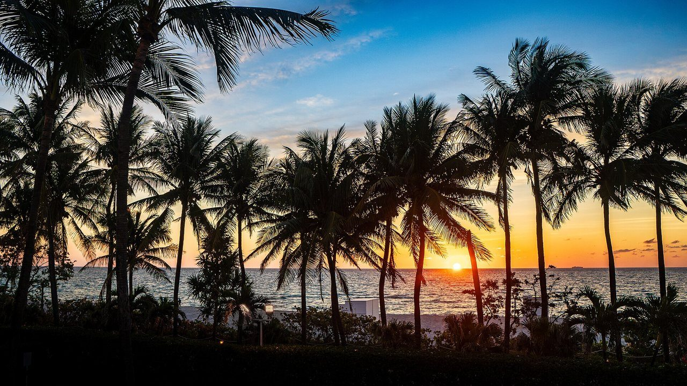

Race, South Beach Sunrise

Behind
Best +0:01
371W
Target 418 W-47 W
- Cadence
- 87rpm
- Heart
- 140bpm
- Speed
- 26.5km/h
Work8 of 15
0:18
Next: · 0:45 at level 16
+3.0%
31 m climbed
4.01 km
21
Resistance / 32
Solo races your best-time ghost: position reads Ahead or Behind, and solo alone gets a Pause button. Frozen at 9:12.